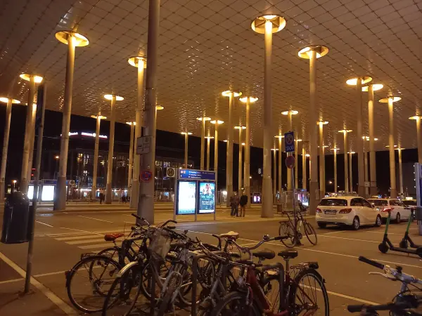
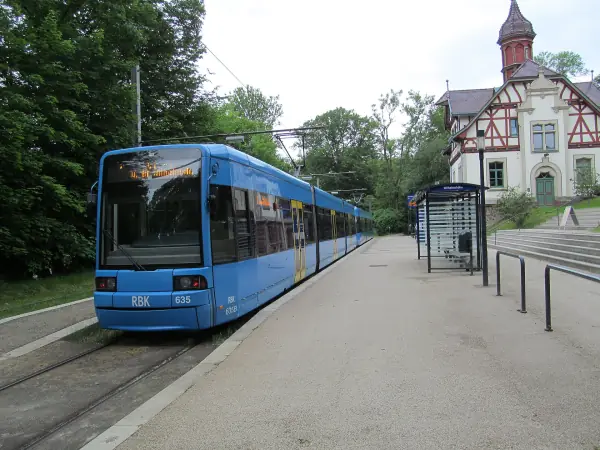
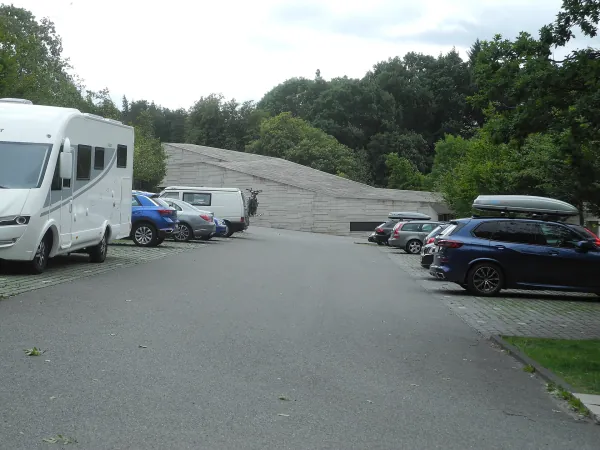

Start / Parken am Bahnhof
Aaron Schiele
geprüft am
geprüft am
Welche Parkplätze gibt es am Bahnhof Wilhelmshöhe?
| Parkplatz | Plätze | Geöffnet | Preis | Zu Fuß zum Bahnhof |
|---|---|---|---|---|
| Parkdeck (DB BahnPark), Bertha-von-Suttner-Straße | 370 | rund um die Uhr | 1 Std. 2 Euro, Tag 24 Euro | unter 100 m |
| Parkplatz Bahnhof (DB BahnPark) | 23, davon 3 barrierefrei | rund um die Uhr | 1 Std. 2 Euro, Tag 24 Euro | unter 50 m |
| Parkplatz West (DB BahnPark) | 66 | rund um die Uhr | auf der Seite nicht genannt | unter 150 m |
| Atrium, Wilhelmshöher Allee 262 | 150, überdacht | Mo bis Sa 7 bis 22.30 Uhr, So 11 bis 21.30 Uhr | 1 Std. 1 Euro, 24 Std. 20 Euro | rund 2 Min. |
| City Center, Bertha-von-Suttner-Straße | überdacht | Mo bis Sa 7.30 bis 22 Uhr | 1 Std. 1,50 Euro, 2 Std. 3 Euro | unter 1 Min. |
| Graf-Bernadotte-Platz | 102 | rund um die Uhr | 24 Std. 5 Euro, 3 Tage 10 Euro, 16 Tage 20 Euro | rund 5 Min. |
| Rolandstraße 1b | 50, überdacht | Mo bis Fr 7 bis 21 Uhr, Sa 7 bis 17 Uhr | 1 Std. 1 Euro | rund 6 Min. |
| Willy-Brandt-Platz | 22 | rund um die Uhr, höchstens 60 Min. | 30 Min. 1 Euro, 1 Std. 2 Euro | rund 1 Min. |
Die Gehzeiten sind Richtwerte bis zum Bahnhofsgebäude. Atrium und City Center haben an Feiertagen zu, City Center und Rolandstraße auch sonntags. Kommst du sonntags oder an einem Feiertag zurück, nimm für die Reise besser einen Platz, der rund um die Uhr offen ist.
Wo parke ich am günstigsten für mehrere Tage?
Auf dem Graf-Bernadotte-Platz. Ein ganzer Tag kostet dort 5 Euro, drei Tage 10 Euro und 16 Tage 20 Euro, bezahlt wird am Parkscheinautomaten. Zum Vergleich: Im Parkdeck der Bahn zahlst du für einen einzigen Tag schon 24 Euro. Rund fünf Minuten Fußweg sind der Preis dafür, bei Regen mit Koffer eben ein bisschen länger.
Für einen halben Tag kann das Atrium günstiger sein: 1 Euro je Stunde, überdacht und nah am Bahnhof. Das Parkdeck der Bahn hat dafür die meisten Plätze und ist immer offen. Dort zahlst du mit Münzen, Scheinen, Karte oder Kreditkarte.
Wo kann ich kurz halten, um jemanden abzuholen?
Am Willy-Brandt-Platz direkt vor dem Bahnhof stehen 22 Plätze für höchstens 60 Minuten: 30 Minuten kosten 1 Euro, eine Stunde 2 Euro. Für ein kurzes Abholen reicht das gut, für Verspätungen im Fernverkehr manchmal knapp.
Was ändert sich am Bahnhofsvorplatz?

Nach der documenta 2027 wird der Vorplatz umgebaut, fertig sein soll er bis 2029. Autos und Taxis rücken dann vom Bahnhofsgebäude weg in Richtung Wilhelmshöher Allee, Bus- und Tramhaltestellen näher an den Eingang. Während der Bauzeit gibt es Übergangslösungen, die Wege zu den Parkplätzen können sich also ändern.
Parke ich für den Bergpark besser am Bahnhof?
Nein. Wenn du nur in den Bergpark willst, fährst du direkt zu den Parkplätzen am Herkules oder am Schloss. Dort kostet der ganze Tag an normalen Tagen 5 Euro, an Wasserspieltagen zwischen 9.30 und 15 Uhr 8,50 Euro, alles Weitere steht unter Parken am Bergpark. Kommst du mit dem Zug, bringen dich Tram und Bus vom Bahnhof in den Park, siehe Mit Bus und Bahn zum Bergpark.
Häufige Fragen
Wie viel kostet das Parken am Bahnhof Wilhelmshöhe?
Im Parkdeck und auf dem Parkplatz der Bahn kostet eine Stunde 2 Euro und ein Tag 24 Euro. Günstiger sind das Atrium mit 1 Euro je Stunde und 20 Euro für 24 Stunden sowie der Graf-Bernadotte-Platz mit 5 Euro für 24 Stunden.
Kann ich am Bahnhof Wilhelmshöhe kostenlos parken?
Nein, keiner der acht Parkplätze am Bahnhof ist kostenlos. Am günstigsten stehst du auf dem Graf-Bernadotte-Platz mit 5 Euro für 24 Stunden.
Wo parke ich am Bahnhof Wilhelmshöhe für eine Woche?
Auf dem Graf-Bernadotte-Platz: 16 Tage kosten dort 20 Euro, länger als 384 Stunden darfst du nicht stehen. Das Parkdeck der Bahn wäre für eine Woche um ein Vielfaches teurer.
Hat das Parkdeck am Bahnhof Wilhelmshöhe rund um die Uhr geöffnet?
Ja, das Parkdeck mit 370 Plätzen ist täglich rund um die Uhr offen, auch an Feiertagen. Es ist nicht überdacht.
Wo lasse ich mein Gepäck, bevor ich parke oder abfahre?
Im Bahnhof gibt es Schließfächer für 24 Stunden: klein für 3 Euro, groß für 4 Euro, bezahlt wird mit Münzen.
Gibt es einen P+R-Parkplatz am Bahnhof Wilhelmshöhe?
Ja, der P+R Wilhelmshöhe liegt in der Bertha-von-Suttner-Straße 21, nächste Haltestelle ist der Bahnhof Wilhelmshöhe. Wie viele Plätze er hat und was er kostet, steht dort nicht.
Quellen abgerufen am 20.10.2026
- Deutsche Bahn Parkplätze Kassel-Wilhelmshöhe · Parking spaces Kassel-Wilhelmshöhe · Schließfächer Kassel-Wilhelmshöhe
- Visit Kassel P+R Wilhelmshöhe
- hessenschau.de Neuer Vorplatz für den Bahnhof Wilhelmshöhe
- Stadt Kassel Parken am Bergpark Wilhelmshöhe
- OpenStreetMap-Routing Fußwege
Weiterlesen

Bahnhof Wilhelmshöhe zum Herkules
Vom Bahnhof Kassel-Wilhelmshöhe mit Tram und Bus zum Herkules, Schloss und Bergpark: Linien, Fahrzeiten, Tickets und der Weg zurück am Abend.
Weiterlesen
Wilhelmshöhe Parkplatz
Parken am Bergpark Wilhelmshöhe: die Parkplätze am Herkules und am Schloss, Preise an normalen Tagen und Wasserspieltagen, dazu Bus und Tram.
WeiterlesenKassel übernachten
Übernachten in Kassel: welche Stadtteile zu deinem Plan passen, warum der Bahnhof Wilhelmshöhe zählt und wo du Ferienwohnungen findest.
Weiterlesen